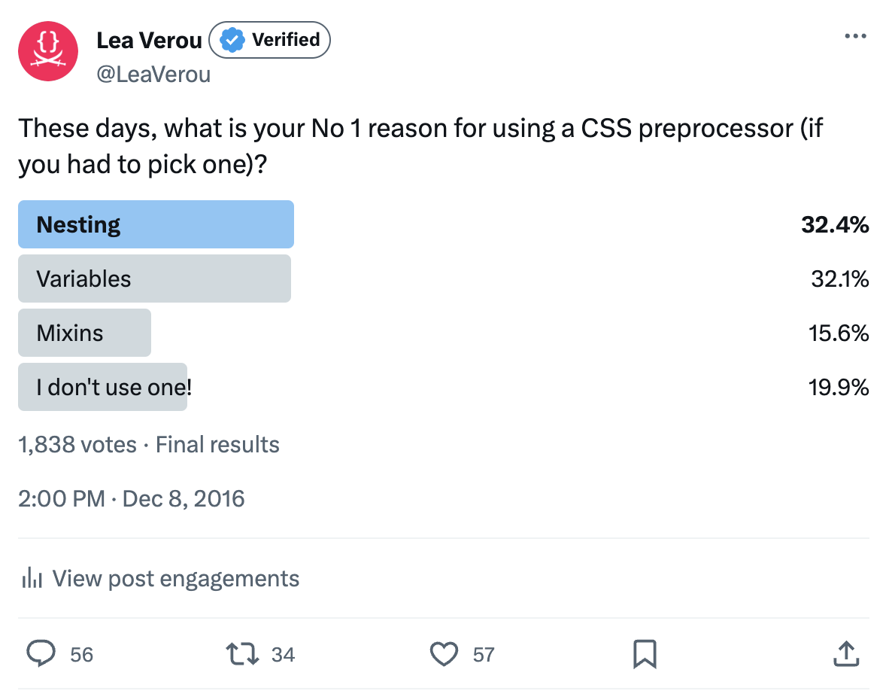

Our story begins back in the ancient 2006, with the appearance of the first CSS preprocessor that actually became popular.
It was called Sass, and it was written in Ruby.
Two more appeared in the following years: Less, written in JavaScript, and Stylus, also written in JavaScript.
CSS Preprocessors are languages that compile to CSS, allowing easier syntax without it having to be suppprted in browsers.
There were other preprocessors before Sass, but they didn't really take off.
A lot changed in the CSS landscape once preprocessors appeared.
Top 3 preprocessor features
Variables
Calculations
Nesting
Note that all three features are about reuse: variables and calculations are about value reuse, nesting is selector reuse.
This is what CSS was desperately lacking: reusability mechanisms to make it more maintainable.
You may be starting to see a pattern:
Once more the native CSS version involves clunkier syntax but is more powerful.
Preprocessors
CSS
Performance requirements
Looser
Stricter
Syntax restrictions
Looser
Stricter
Iteration speed
Faster
Slower
Context Awareness
None
Full
Reactivity
None
Yes
Implementation Limits
CSS
C++
Preprocessors and native CSS syntax have different strengths and weaknesses.
- Native CSS syntax is subject to much stricter performance requirements.
Preprocessors only run once, split out CSS, and are done with it, so anything that runs in speed acceptable for a build tool is fair game.
CSS doesn't have that luxury. CSS code can be changed and need to re-run millions of times per second, so it has to be blazing fast.
This means that certain things that are simple for preprocessors are very hard to do in CSS.
- Native CSS syntax is subject to much stricter syntax restrictions.
Any syntax added to CSS has to be *both* backwards compatible with existing CSS as well as forwards compatible with any possible future CSS.
While this is also a concern for preprocessors, things are a bit easier there due to versioning.
- Preprocessors have much faster iteration speed.
Adding a new feature requires consensus among the preprocessor maintainers, then it can be implemented and shipped soon after.
Adding a new feature to CSS requires consensus among the CSS WG, then someone to write the specification, iterate on it, ensure the spec is implementable,
convince browser vendors to implement it, then wait for it to be implemented, then wait for it to be shipped, then wait for it to be widely adopted.
The length of this process varies, but it's usually measured in years.
- However, native CSS syntax has full context awareness.
It knows what the viewport size is, which media queries apply, what is supported and what isn't, what are the metrics of the font being used, etc.
This allows native CSS syntax to be a lot more powerful.
- Native CSS syntax is reactive. If any of its components change, it will update automatically.
Preprocessor syntax is executed top to bottom, analogously to imperative programming.
- Lastly, because preprocessor syntax has to be ultimately compiled to CSS, it is subject to the same implementation limits as CSS.
However, native CSS syntax can *extend* the bounds of what is possible in CSS, and is only bound by the implementation limits of the browser’s C++.
This is not a competition: Preprocessors are excellent for prototyping CSS's future with a tighter feedback loop,
and allow us to get feedback from real developers, using these features on real projects.
- Nesting was designed to avoid the duplication and error-prone-ness of overly long selectors with a shared prefix.
- By default selectors nested inside each other are assumed to be descendants.
- To override that, authors can use the `&` character to refer to the parent selector.
Sass also did concatenation, to facilitate patterns like BEM.
Because preprocessors are text-based, things like this are easier.
This has always been out of scope for CSS and that remained constant until today, so we will not discuss it more going forwards.
In fact, this feature was recognized as [a mistake by Sass’ designers](https://github.com/w3c/csswg-drafts/issues/2701#issuecomment-395572904) too.
While rare, the ampersand can come later in the selector as well,
usually to create variations depending on the context
Can we adopt this in CSS?
CSSParsingCrash Course
Parsing
Characters
Tokens
Complex Constructs
CSS tokens
<number-token><hash-token>
- Parsing always begins with tokenization.
- Tokens are the smallest meaningful units in a programming language
- Tokens are to programming what words are to natural language.
- Here are some examples of tokens in CSS, shown as railroad diagrams directly from the CSS Syntax spec.
CSS Tokenization Example
#nav > a:hover {
background: white url("bg.png");
text-decoration-thickness: .1em;
}
- The first step of parsing CSS (and any code really) is tokenization.
- The tokenizer reads the code character by character and groups them into tokens, i.e. meaningful syntactical units.
- For CSS, these tokens are defined in the [CSS Syntax](https://drafts.csswg.org/css-syntax/) specification.
CSS Grammars
Simple selectors (simplified)
[ ]
Grouping
|
Alternative
?
Optional
*
0 or more
+
1 or more
#
1+, comma-separated
- The next step is parsing, which is the process of grouping tokens into constructs.
- How this happens is defined in a compact form called a grammar.
- [`<any-value>`](https://drafts.csswg.org/css-syntax-3/#typedef-any-value)
is a special token defined to allow any stream of tokens except open structures (unmatched parentheses, brackets, braces, broken strings, etc).
- This is a simplified version. [Full selector grammmar](https://www.w3.org/TR/selectors/#grammar)
- [Full declaration grammar](https://www.w3.org/TR/css-syntax-3/#grammar)
CSS Grammars
Simple selectors (simplified)
- The next step is parsing, which is the process of grouping tokens into constructs.
- How this happens is defined in a compact form called a grammar.
- [`<any-value>`](https://drafts.csswg.org/css-syntax-3/#typedef-any-value)
is a special token defined to allow any stream of tokens except open structures (unmatched parentheses, brackets, braces, broken strings, etc).
- This is a simplified version. [Full selector grammmar](https://www.w3.org/TR/selectors/#grammar)
- [Full declaration grammar](https://www.w3.org/TR/css-syntax-3/#grammar)
- Start
- `<ident-token>`
- `<type-selector>`
- `<hash-token>`
- `<id-selector>`
- `'.'`
- `<class-selector>`
- `'['`
- `<attribute-selector>`
- `':'`
- `<ident-token>`
- `<pseudo-class-selector>`
- `':'`
- `<pseudo-element-selector>`
- Note that for most of these, we can tell what we have from the very first token.
Only to distinguish pseudo-classes from pseudo-elements do we actually need two tokens, i.e. we need to "look ahead".
- This is not a coincidence, it is by design.
- Being able to determine the construct from the current token and by looking ahead at a fixed number of tokens
is called "fixed lookahead" or LL(k) and is a very desirable property in parsers.
- The CSS parser specifically is LL(1), i.e. needs to only look ahead at most one token.
- Take a look at this token stream here. Can you guess what CSS construct it represents?
- Could it be a selector, like this one? Or maybe a declaration, like this one?
- Let’s try to tokenize them and find out!
Without nesting we wouldn’t even try both rules at once, we would know whether we’re parsing a rule or a declaration in the first place, so there is no ambiguity.
But with nesting, every time we’re parsing the inside of a rule, we could have either.
Would that make CSS ambiguous?
Would it make it like the elephant in the well known parable who appeared to be different things to different blindfolded people depending on which part they touched?
Nah, it’s not as bad as that.
Eventually, we would read an opening brace (for a selector) or a semicolon or closing brace (for a declaration) and we'd know what we have.
But do note that we lost that very desirable fixed lookahead property:
we now need to read a potentially unbounded number of tokens to know what we have.
So when we started exploring the possibility of adding Nesting to CSS natively, this was a non starter.
No browser would implement a CSS feature that would so fundamentally change CSS parsing.
Remember, CSS needs to be blazing fast, and backtracking is slow.
First nesting proposal
[Read a copy of the proposal](./tab-specs/v0/css-nesting/Overview.html)
Interestingly, the plugin supported @-rule nesting, even though the spec did not.
Well, not quite 84 but it sure felt like it.
Part of the reason not much was happening was that a few people thought nesting was better served by a Houdini custom @-rule.

This will be used all over stylesheets. Having to prefix every rule with `&` or `@nest` will be tedious to write, easy to forget, and noisy to read.
And it’s incompatible with `@scope`, so copying and pasting will require a ton of fixup.
We must do something, ASAP!
Elika Etemad
Extremely prolific CSS editor
(In actuality we had a video call, and this is my recollection of the conversation)
Further breakouts
Lea Verou
That’s me!
Tab Atkins-Bittner
Extremely prolific CSS editor
Miriam Suzanne
Sass core contributor
Jen Simmons
Developer Advocate @ Apple
Brad Kemper
Web Designer/Developer
Shortly after, there were two seminal breakouts among these people, all seasoned CSS WG members and co-editors of several specs.
We had general consensus that the syntax at the time needed improvement before it shipped in browsers,
and several ideas about how to improve it.
Selectors of nested rules start with a disambiguating token
ul {
list-style: "🦄";
& li { margin: 0; }
& a { color: inherit; }
@nest nav & {
list-style: none;
}
}
Backwards compat with postcss-nesting code
Allows mixing rules and declarations
Easy to forget prefix
Tedious: O(N) extra syntax on the number of rules
Noisy to read
Incompatible with @scope
2
Nest rules in block
Nested rules are wrapped in a block
ul {
list-style: "🦄";
{ /* Only rules in here */
li { margin: 0; }
a { color: inherit; }
nav & {
list-style: none;
}
}
}
ul {
list-style: "🦄";
}
{ /* Only rules in here */
li { margin: 0; }
a { color: inherit; }
nav & {
list-style: none;
}
}
ul {
list-style: "🦄";
@nest { /* Only rules in here */
li { margin: 0; }
a { color: inherit; }
nav & {
list-style: none;
}
}
}
Unrestricted selector syntax
O(1) extra syntax on the number of rules
Extra indentation level
No mixing of declarations and rules
There were many more ideas about what the switch could be, even ASCII like `&&` or `@`,
and each had its own pros and cons.
3
Parser switch
A specific token that signifies "only rules from now on"
ul {
list-style: "🦄";
@nest; /* Only rules below */
li { margin: 0; }
a { color: inherit; }
nav & {
list-style: none;
}
}
ul {
list-style: "🦄";
@media (width < 500px) {
margin-left: 1ch;
}
li { margin: 0; }
a { color: inherit; }
nav & {
list-style: none;
}
}
ul {
list-style: "🦄";
& li { margin: 0; }
a { color: inherit; }
nav & {
list-style: none;
}
}
O(1) extra syntax on the number of rules
Reordering code could break it
Nonobvious for some of these
In this strategy, as long as we encounter a non-declaration, we assume that everything after is a rule.
This could be a token specifically for this, such as `@nest`, or any other known rule, including a no-op `@nest`.